정보처리기사(구) (2016-03-06 기출문제)
1과목: 데이터 베이스
1. 이행적 함수 종속 관계를 의미하는 것은?
- A→B 이고 B→C 일 때, A→C 를 만족하는 관계
- A→B 이고 B→C 일 때, C→A 를 만족하는 관계
- A→B 이고 B→C 일 때, B→A 를 만족하는 관계
- A→B 이고 B→C 일 때, C→B 를 만족하는 관계
(정답률: 83%)

2. 다음 SQL 질의를 관계 대수식으로 표현 하면?(단, P는 WHERE 조건절)
- πR1(σP(A1))
- σA1(πP(R1))
- πA1(σP(R1))
- σR1(πP(A1))
(정답률: 44%)
3. DML에 해당하는 SQL 명령으로만 짝지어진 것은?
- DELETE, UPDATE, CREATE, ALTER
- INSERT, DELETE, UPDATE, DROP
- SELECT, INSERT, DELETE, UPDATE,
- SELECT, INSERT, DELETE, ALTER
(정답률: 82%)
4. Which is the design step of database correctly?
- Requirement Formulation → Conceptual Schema → Physical Schema → Logical Schema
- Logical Schema → Requirement Formulation → Conceptual Schema → Physical Schema
- Requirement Formulation → Conceptual Schema → Logical Schema → Physical Schema
- Logical Schema → Requirement Formulation → Physical Schema → Conceptual Schema
(정답률: 75%)
5. 다음 트리를 후위 순회 (Post Traversal)할 경우 가장 마지막에 탐색 되는 것은?
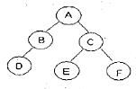
- A
- D
- E
- F
(정답률: 78%)
6. 데이터베이스의 특성으로 옳은 내용 모두를 나열한 것은?
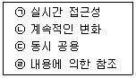
- (ㄱ)
- (ㄴ), (ㄷ)
- (ㄱ), (ㄷ), (ㄹ)
- (ㄱ), (ㄴ), (ㄷ), (ㄹ)
(정답률: 82%)
7. 릴레이션의 특징으로 옳지 않은 것은?
- 한 릴레이션에 포함된 튜플 사이에는 순서가 없다.
- 속성의 값은 논리적으로 더 이상 쪼갤 수 없는 원자 값이다.
- 한 릴레이션에 포함된 튜플들은 모두 상이한다.
- 한 릴레이션을 구성하는 속성들 사이의 순서는 존재하며, 중요한 의미를 가진다.
(정답률: 80%)
8. 병행제어의 목적으로 옳지 않은 것은?
- 사용자에 대한 응답시간 최소화
- 시스템 활용도 최대화
- 데이터베이스 일관성 유지
- 데이터베이스 공유도 최소화
(정답률: 83%)
9. 데이터 모델에 대한 다음 설명 중 ( ) 안에 들어갈 내용으로 가장 타당한 것은?
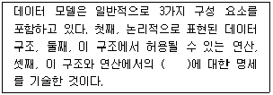
- 개체
- 속성
- 도메인
- 제약조건
(정답률: 71%)
10. 개체 - 관계 모델에 대한 설명으로 옳지 않은 것은?
- 오너 - 멤버 (Owner-Member) 관계라고도 한다.
- 개체 타입과 이들 간의 관계 타입을 기본 요소로 이용하여 현실 세계를 개념적으로 표현한다.
- E-R 다이어그램에서 개체 타입은 사각형으로 나타낸다.
- E-R 다이어그램에서 속성은 타원으로 나타낸다.
(정답률: 64%)
11. 스택의 자료 삭제 알고리즘이다. ( ) 안 내용으로 가장 적합한 것은?(단, Top: 스택포인터, S: 스택의 이름)
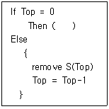
- Overflow
- Top = Top+1
- Underflow
- Top = Top-2
(정답률: 62%)
12. DBMS의 필수기능 중 사용자와 데이터베이스 사이의 인터페이스 수단을 제공하는 기능은?
- Definition 기능
- Control 기능
- Manipulation 기능
- Strategy 기능
(정답률: 58%)
13. SQL 구문에서 “having" 절은 반드시 어떤 구문과 사용되어야 하는가?
- GROUP BY
- ORDER BY
- UPDATE
- JOIN
(정답률: 81%)
14. 순차 파일에 대한 설명으로 옳지 않은 것은?
- 파일 탐색 효율이 우수하며, 접근 시간 및 응답 시간이 빠르기 때문에 대화형 처리에 적합하다.
- 연속적인 레코드의 저장에 의해 레코드 사이에 빈 공간이 존재하지 않으므로 기억장치의 효율적인 이용이 가능하다.
- 필요한 레코드를 삽입, 삭제, 수정하는 경우 파일을 재구성해야 하므로 파일 전체를 복사해야 한다.
- 어떤 형태의 입출력 매체에서도 처리가 가능하다.
(정답률: 64%)
15. 트랜잭션은 자기의 연산에 대하여 전부 (All)또는 전무(Nothing) 실행만이 존재하며, 일부 실행으로는 트랜잭션의 기능을 가질 수 없다는 트랜잭션의 특성은?
- consistency
- atomicity
- isolation
- durability
(정답률: 71%)
16. 로킹(Locking) 단위에 대한 설명으로 옳은 것은?
- 로킹 단위가 크면 병행성 수준이 낮아진다.
- 로킹 단위가 크면 병행 제어 기법이 복잡해진다.
- 로킹 단위가 작으면 로크(lock)의 수가 적어진다.
- 로킹은 파일 단위로 이루어지며, 레코드 또는 필드는 로킹 단위가 될 수 없다.
(정답률: 64%)
17. 관계 데이터 모델에서 릴레이션(Relation)에 포함되어 있는 튜플(Tuple)의 수를 무엇이라고 하는가?
- Degree
- Cardinality
- Attribute
- Cartesian product
(정답률: 77%)
18. 다음 초기 자료에 대하여 삽입 정렬 (Insertion Sort)을 이용하여 오름차순 정렬한 경우 1회전후의 결과는?
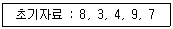
- 3, 4, 8, 7, 9
- 3, 4, 9 ,7, 8
- 7, 8, 3, 4, 9
- 3, 8, 4, 9, 7
(정답률: 78%)
19. 관계 데이터베이스의 정규화에 대한 설명으로 옳지 않은 것은?
- 정규화를 거치지 않으면 여러 가지 상이한 종류의 정보를 하나의 릴레이션으로 표현하여 그 릴레이이션을 조작할 때 이상(Anomaly) 현상이 발생할 수 있다.
- 정규화의 목적은 각 릴레이션에 분산된 종속성을 하나의 릴레이션에 통합 하는 것이다.
- 이상(Anomaly) 현상은 데이터들 간에 존재하는 함수 종속이 하나의 원인이 될 수 있다.
- 정규화가 잘못되면 데이터의 불필요한 중복이 야기되어 릴레이션을 조작할 때 문제가 발생할 수 있다.
(정답률: 66%)
20. 다음 그림에서 트리의 차수(degree)는?
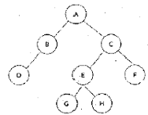
- 1
- 2
- 3
- 4
(정답률: 79%)
2과목: 전자 계산기 구조
21. 인터럽트 백터에 필수적인 것은?
- 분기 번지
- 메모리
- 제어규칙
- 누산기
(정답률: 51%)
22. 동기 고정식 마이크로오퍼레이션(MO) 제어의 특징을 설명한 것으로 틀린 것은?
- 제어장치의 구현이 간단하다.
- 중앙처리장치의 시간이 이용이 비효율적이다.
- 여러 종류의 MO 수행시 CPU사이클 타임이 실제적인 오퍼레이션 시간보다 길다.
- MO이 끝나고 다음 오퍼레이션이 수행될 될 때까지 시간지연이 있게 되어 CPU 처리 속도가 느려진다.
(정답률: 44%)
23. 상대 주소모드를 사용하는 컴퓨터에서 분기 명령어가 저장된 기억장치 주소가 256AH일 때, 명령어에 지정된 변위 값이 -75H인 경우 분기되는 주소의 위치는?(단, 분기명령어의 길이는 3바이트이다.)
- 24F2H 번지
- 24F5H 번지
- 24F8H 번지
- 256DH 번지
(정답률: 48%)
24. 주소 명령어 형식에 관한 설명으로 틀린 것은?
- 0- 주소 명령어 형식은 PUSH/POP 연산을 사용한다.
- 1- 주소 명령어 형식은 누산기를 사용한다.
- 2- 주소 명령어 형식은 MOVE 명령이 필요하다.
- 3- 주소 명령어 형식은 내용이 연산 결과 저장으로 소멸된다.
(정답률: 58%)
25. 16진수 80H가 들어 있는 8비트 레지스터에서 0, 2, 4번째 비트를 세트(set)하려면 얼마의 값을 OR 연산 하여야 하는가?
- 10H
- 11H
- 12H
- 15H
(정답률: 36%)
26. 그림과 같은 메모리 IC에 필요한 핀(pin)의 수는?
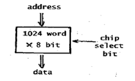
- 17
- 18
- 19
- 20
(정답률: 32%)
27. 병렬컴퓨터에서 버스의 클럭 주기가 80ns이고, 데이터 버스의 폭이 8byte라고 할 때, 전송 할수 있는 데이터의 양은?
- 1 Mbytes/sec
- 10 Mbytes/sec
- 100 Mbytes/sec
- 1000 Mbytes/sec
(정답률: 44%)
28. 여러 개의 LAB(Logic Array Block)과 연결선인 PIA(Programmable Interconnection Array)로 구성되며, 빠른 성능이나 정확한 타이밍의 예측의 필요로 하는 곳에 사용되는 것은?
- PLA(Programmable Logic Array)
- PAL(Programmable Array Logic)
- FPGA(Field Programmable Gate Array)
- CPLD(Complex Programmable Logic Device)
(정답률: 29%)
29. 명령을 수행하기 위해 CPU 내의 레지스터와 플래그의 상태 변환을 일으키는 작업은 무엇인가?
- Common operation
- Axis operation
- Micro operation
- Count operation
(정답률: 54%)
30. 8비트로 된 레지스터에서 2의 보수로 숫자를 표시한다면 이 레지스터로 표시할 수 있는 10진수의 범위는?(단, 첫째 비트는 부호 비트로 0,1일 때 각각 양(+),음(-)을 나타낸다고 가정한다.)
- -256 ~ +256
- -128 ~ +127
- -128 ~ +128
- -256 ~ +127
(정답률: 63%)
31. 부동 소수점인 두 수의 나눗셈을 위한 순서를 올바르게 나열한 것은?
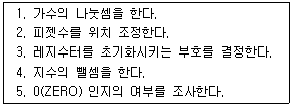
- 3-2-4-1-5
- 5-3-2-1-4
- 3-2-1-4-5
- 5-3-2-4-1
(정답률: 47%)
32. 두 데이터의 비교 (Compare)를 위한 논리연산은?
- XOR 연산
- AND 연산
- OR 연산
- NOT 연산
(정답률: 68%)
33. 2개 이상의 프로그램을 주기억장치에 기억시키고 CPU를 번갈아 사용하면서 처리하여 컴퓨터 시스템 자원 활용률을 극대화하기 위한 프로그래밍 기법은?
- 분산처리 프로그래밍
- 일괄처리 프로그래밍
- 멀티 프로그래밍
- 리얼타임 프로그래밍
(정답률: 53%)
34. 다른 컴퓨터를 이용하여 어셈블리 언어의 프로그램을 이식(porting)하고자 하는 마이크로프로세서의 기계어로 번역하는 프로그램은?
- 크로스 링커
- 크로스 어셈블러
- 매크로 어셈블러
- 매크로 컴파일러
(정답률: 49%)
35. 명령어 처리를 위한 마이크로 사이클이 아닌 것은?
- 인출(Fetch)
- 간접(Indirect)
- 실행(Execute)
- 메모리(Memory)
(정답률: 68%)
36. 그림의 Decoder에서 Y₀ = 0, Y1 = 1이 입력되었을 때 “1”을 출력하는 단자는?
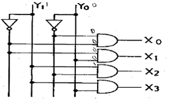
- X₀
- X1
- X2
- X3
(정답률: 62%)
37. 입·출력 제어장치의 종류가 아닌 것은?
- DMA
- 채널
- 데이터 버스
- 입출력 프로세서
(정답률: 46%)
38. 논리 마이크로 연산에 있어서 레지스터 A와 B의 값이 다음과 같이 주어졌을 때 selective-set 연산을 수행하면 어떻게 되는가? (단, A는 프로세서 레지스터이고, B는 논리 오퍼랜드이다.)
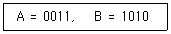
- 1100
- 1011
- 0011
- 1010
(정답률: 62%)
39. 하나의 명령을 처리하는 과정으로 옳게 나열한 것은?
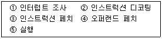
- ③ → ② → ④ → ⑤ → ①
- ① → ③ → ② → ⑤ → ④
- ② → ③ → ④ → ⑤ → ①
- ④ → ③ → ② → ⑤ → ①
(정답률: 36%)
40. I/O operation과 관계가 없는 것은?
- channel
- handshaking
- interrupt
- emulation
(정답률: 51%)
3과목: 운영체제
41. 캐싱(Caching)과 원격서비스의 비교에 대한 설명 중 옳지 않은 것은?
- 많은 원격 접근들은 캐싱이 사용될 때 지역 캐쉬에 의해서 효율적으로 처리될 수 있다.
- 캐쉬- 일관성 문제는 캐싱의 가장 큰 결점이다.
- 모든 원격 접근은 원격- 서비스 방법이 사용 될 때 네트워크를 통해서만 처리된다.
- 캐쉬- 일관성 문제는 쓰기 접근 빈도가 많은 접근형태에서 캐싱이 우수하다.
(정답률: 37%)
42. 현재 헤드의 위치가 50에 있고 트랙 0번 방향으로 이동하며, 요청 대기 열에는 아래와 같은 순서로 들어 있다고 가정할 때 SSTF(Shortest Seek Time First)스케줄링 알고리즘에 의한 헤드의 총 이동 거리는 얼마인가?
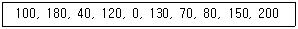
- 790
- 380
- 370
- 250
(정답률: 49%)
43. 세마포어를 사용해서 상호 배제를 구현할 수 있다. 세마포어를 2로 초기화하였다면, 그 의미는 무엇인가?
- 임계구역에 2개의 프로세서가 들어갈 수 있다.
- 두 개의 임계구역이 존재한다.
- 모든 세마포어의 기본 값은 2이다.
- 생산자/소비자를 구현하는 세마포어의 초기 값은 2이다.
(정답률: 47%)
44. 적응기법(Adaptive Mechanism)이란 시스템이 유동적인 상태 변화에 적절히 반응하도록 하는 기법을 의미한다. 다음 스케줄링 기법 중 적응 기법의 개념을 적용하고 있는 것은?
- FIFO
- HRN
- MFQ
- RR
(정답률: 42%)
45. 10K 프로그램이 할당될 때 주기억장치 관리기법인 First-fit 방법을 적용할 경우 해당하는 영역은?
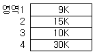
- 영역 1
- 영역 2
- 영역 3
- 영역 4
(정답률: 74%)
46. 쉘(shell)의 기능이 아닌 것은?
- 자체의 내장 명령어 제공
- 파이프라인 기능
- 주기억장치에 상주
- 입출력 방향지정
(정답률: 44%)
47. 디렉토리 구조 중 가장 간단한 형태로 같은 디렉토리에 시스템에 보관된 모든 파일 정보를 포함하는 구조는?
- 일단계 디렉토리
- 트리 구조 디렉토리
- 이단계 디렉토리
- 비주기 디렉토리
(정답률: 69%)
48. 모니터에 대한 설명으로 옳지 않은 것은?
- 모니터의 경계에서 상호배제가 시행된다.
- 자료추상화와 정보은폐 기법을 기초로 한다.
- 공유 데이터와 이 데이터를 처리하는 프로시저로 구성된다.
- 모니터 외부에서도 모니터 내의 데이터를 직접 액세스 할 수 있다.
(정답률: 74%)
49. 분산처리시스템에 대한 설명과 관련 없는 것은?
- 분산된 노드들은 통신 네트워크를 이용하여 메시지를 주고 받음으로서 정보를 교환한다.
- 사용자에게 동적으로 할당할 수 있는 일반적인 자원들이 각 노드에 분산되어 있다.
- 시스템 전체의 정책을 결정하는 어떤 통합적인 제어 기능은 필요하지 않다.
- 사용자는 특정 자원의 물리적 위치를 알지 못하여도 사용할 수 있다.
(정답률: 67%)
50. 다음 암호화 기법에 대한 설명으로 틀린 것은?
- DES는 비대칭형 암호화 기법이다.
- RSA는 공개키/비밀키 암호화 기법이다.
- 디지털 서명은 비대칭형 암호 알고리즘을 사용 한다.
- DES 알고리즘에서 키 관리가 매우 중요하다.
(정답률: 41%)
51. 다음 표는 고정 분할에서의 기억 장치 Fragmentation현상을 보이고 있다. External Fragmentation은 총 얼마인가?
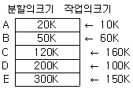
- 480K
- 430K
- 260K
- 170K
(정답률: 57%)
52. 디스크 스케줄링의 목적과 거리가 먼 것은?
- 처리율 극대화
- 평균 반응시간의 단축
- 응답시간의 최소화
- 디스크 공간 확보
(정답률: 66%)
53. 프로세서의 상태정보를 갖고 있는 PCB (Process Control Block)의 내용이 아닌 것은?
- 프로세스 식별정보
- 프로세스 제어정보
- 프로세스(CPU) 상태정보
- 프로세스 생성정보
(정답률: 56%)
54. 로더의 종류 중 별도의 로더 없이 언어번역 프로그램이 로더의 기능까지 수행하는 방식은?
- Absolute Loader
- Direct Linking Loader
- dynamic Loader
- Compile and Go Loader
(정답률: 60%)
55. 분산시스템의 위상에 따른 분류 방식 중 다음 설명에 해당하는 방식은?
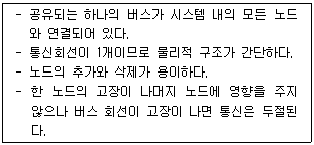
- Ring Connected
- Multiaccess Bus Connected
- Partially Connected
- Fully Connected
(정답률: 67%)
56. 인터럽트의 종류 중 컴퓨터 자체 내의 기계적인 장애나 오류로 인하여 발생하는 것은?
- 입/출력의 인터럽트
- 외부 인터럽트
- 기계 검사 인터럽트
- 프로그램 검사 인터럽트
(정답률: 57%)
57. 데이터의 비밀성을 보장하는데 사용될 수 있는 암호화 알고리즘이 아닌 것은?
- DES(Data Encryption Standard)
- RSA(Rivest Shamir Adleman)
- Read-Solomon code
- FEAL(Fast Encryption Algorithm)
(정답률: 57%)
58. 시스템 타이머에서 일정한 시간이 만료된 경우나 오퍼레이터가 콘솔상의 인터 럽트 키를 입력한 경우 발생하는 인터럽트는?
- 프로그램 검사 인터럽트
- SVC 인터럽트
- 입·출력 인터럽트
- 외부 인터럽트
(정답률: 39%)
59. UNIX 파일 시스템의 블록구조에 포함되지 않은 것은?
- USER BLOCK
- BOOT BLOCK
- INODE LIST
- SUPER BLOCK
(정답률: 47%)
60. UNIX에서 파일의 사용 허가를 정하는 명령은?
- cp
- chmod
- cat
- ls
(정답률: 73%)
4과목: 소프트웨어 공학
61. 소프트웨어 재사용에 가장 많이 이용되는 것은?
- Hipo-chart
- Test Case
- Source Code
- Project Plan
(정답률: 63%)
62. 객체지향 기법의 캡슐화(Encapsulation)에 대한 설명으로 틀린 것은?
- 변경 발생 시 오류의 파급효과가 적다.
- 인터페이스가 단순화 된다.
- 소프트웨어 재사용성이 높아진다.
- 상위 클래스의 모든 속성과 연산을 하위 클래스가 물려받는 것을 의미한다.
(정답률: 73%)
63. CASE에 대한 설명으로 옳지 않은 것은?
- 소프트웨어 모듈의 재사용성이 향상된다.
- 자동화된 기법을 통해 소프트웨어 품질이 향상된다.
- 소프트웨어 사용자들이 소프트웨어 사용 방법을 신속히 숙지할 수 있도록 개발된 자동화 패키지이다.
- 소프트웨어 유지보수를 간편하게 수행할 수 있다
(정답률: 59%)
64. OMA(Object Management Architecture)레퍼런스 모델은 OMG(Object Management Group)의 활동 방향과 목적에 부합하는 모델이다. 다음 중 OMA 레퍼런스 모델의 구성요소가 아닌 것은?
- Common Facilities
- Application Interface
- User Interface
- Domain Interface
(정답률: 35%)
65. 소프트웨어를 개발하기 위한 비즈니스(업무)를 객체와 속성, 클래스와 멤버, 전체와 부분등으로 나누어서 분석해 내는 기법은?
- 객체지향 분석
- 구조적 분석
- 기능적 분석
- 실시간 분석
(정답률: 64%)
66. 다음 객체지향 기법에 대한 설명에 해당하는 것은?
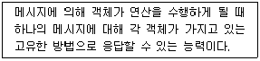
- Encapsulation
- Abstraction
- Inheritance
- Polymorphism
(정답률: 48%)
67. 소프트웨어의 문서(document) 표준이 되었을 때, 개발자가 얻는 이득 으로 가장 거리가 먼 것은?
- 시스템 개발을 위한 분석과 설계가 용이하다.
- 프로그램 유지보수가 용이하다.
- 프로그램의 확장성이 있다.
- 프로그램 개발 인력이 감소된다.
(정답률: 75%)
68. COCOMO(COnstructive COst MOdel) 비용예측 모델에 대한 설명으로 옳지 않은 것은?
- 보헴 (Boehm)이 제안한 소스 코드 (Source Code) 의 규모에 의한 비용예측 모델이다.
- 소프트웨어 프로젝트 유형에 따라 다르게 책정되는 비용 산정 수식(Equation)을 이용한다.
- COCOMO 방법은 가정과 제약조건이 없어 모든 시스템에 동일하게 적용할 수 있다.
- 같은 규모의 소프트웨어라도 그 유형에 따라 비용이 다르게 산정된다.
(정답률: 67%)
69. 소프트웨어 품질 목표 중 하나 이상의 하드웨어 환경에서 운용되기 위해 쉽게 수정될 수 있는 시스템 능력을 의미하는 것은?
- Reliability
- Correctness
- Portability
- Efficiency
(정답률: 53%)
70. 다음 중 가, 나에 들어갈 내용으로 옳게 짝지어진 것은?
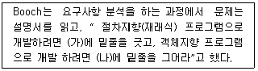
- 가-데이터, 나- 명령문
- 가-명령문, 나- 의문문
- 가-의문문, 나- 제어문
- 가- 동사, 나- 명사
(정답률: 57%)
71. 사용자의 요구사항을 충분히 분석할 목적으로 시스템의 일부분 또는 시제품을 일시적으로 간결히 구현한 다음 다시 요구사항을 반영하는 과정을 반복하는 점진적 개발 생명주기를 갖는 모델은?(문제 오류로 가답안 발표시 4번으로 발표되었지만 확정답안 발표시 2, 4번으로 중복답안 처리 되었습니다. 여기서는 4번을 누르면 정답 처리 됩니다.)
- 4GT Model
- Spiral Model
- Waterfall Model
- Prototype Model
(정답률: 74%)
72. 소프트웨어 프로젝트 관리를 효과적으로 수행하는데 필요한 3P와 거리가 먼 것은?
- PROBLEM
- PROCESS
- PASSING
- PEOPLE
(정답률: 78%)
73. 데이터 모델링에 있어서 ERD (Entity Relationship Diagram)는 무엇을 나타내고자하는가?
- 데이터 흐름의 표현
- 데이터 구조의 표현
- 데이터 구조들과 그들 간의 관계들을 표현
- 데이터 사전을 표현
(정답률: 72%)
74. 소프트웨어 재공학 활동 중 기존 소프트웨어의 명세서를 확인하고 소프트웨어의 동적을 이해하고 재공학 대상을 선정하는 것은?
- 분석(analysis)
- 재구성(restructuring)
- 역공학(reverse engineering)
- 이식(migeation)
(정답률: 54%)
75. 소프트웨어 개발 비용 산정 요소로 알맞지 않은 것은?
- 프로젝트 자체 요소로 문제의 복잡도, 시스템의 규모, 요구되는 신뢰도 등이 있다
- 개발에 필요한 인적 자원, 하드웨어 자원, 소프트웨어 자원 등이 있다.
- Person-Month(PM) 당 제작되는 평균 LOC(Line of Code) 등이 있다.
- 프로젝트 관리 방법론에 따라 생산된 문서와 관리 비용 등이 있다
(정답률: 47%)
76. 소프트웨어 품질 측정에 위해 개발자 관점에서 고려해야 할 항목으로 가장 거리가 먼 것은?
- 정확성
- 무결성
- 간결성
- 일관성
(정답률: 69%)
77. 정형 기술 검토(FTR)의 지침 사항으로 옳은 내용 모두를 나열한 것은?
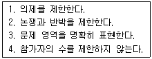
- 1, 4
- 1, 2, 3
- 1, 2, 4
- 1, 2, 3, 4
(정답률: 72%)
78. 시스템의 기능을 여러 개의 고유 모듈들로 분할하여 이들 간의 인터페이스를 계층구조로 표현한 도형 또는 도면을 무엇이라 하는가?
- Flow Chart
- HIPO Chart
- Control Specification
- Box Diagram
(정답률: 54%)
79. 소프트웨어 위기 발생요인과 거리가 먼 것은?
- 소프트웨어 개발 요구의 다양화
- 소프트웨어 규모의 증대와 복잡도에 따른 개발 비용의 감소
- 작업일정과 비용의 추정치가 부정확
- 새로운 소프트웨어의 오류율이 고객 불만과 신뢰결여를 유발
(정답률: 65%)
80. 소프트웨어 개발에서 요구사항 분석 (Requirements Analysis)과 거리가 먼 것은?
- 비용과 일정에 대한 제약설정
- 타당성 조사
- 요구사항 정의 문서화
- 설계 명세서 작성
(정답률: 53%)
5과목: 데이터 통신
81. 디지털 통신망을 구성하는 디지털 교환기 사이에 클록 주파수의 차이가 생기면 데이터의 손실이 발생할 수 있는데 이를 무엇이라 하는가?
- 슬립(slip)
- 폴링 (polling)
- 피기백(piggyback)
- 인터리빙(interleaving)
(정답률: 44%)
82. 하나의 정보를 여러 개의 반송파로 분할하고, 분할된 반송파 사이의 주파수 간격을 최소화하기 위해 직교 다중화해서 전송하는 통신방식으로, 와이브로 및 디지털 멀티미디어 방송 등에 사용되는 기술은?
- TDM
- DSSS
- OFDM
- FHSS
(정답률: 58%)
83. 10.0.0.0 네트워크 전체에서 마스크 값으로 255.240.0.0를 사용할 경우 유효한 서브네트 ID는?
- 10.240.0.0
- 10.0.0.32
- 10.1.16.3
- 10.29.240.0
(정답률: 51%)
84. 주파수 분할 다중화기(FDM)에서 부채널 간의 상호 간섭을 방지하기 위한 것은?
- 가드 밴드(Guard Band)
- 채널(Channel)
- 버퍼(Buffer)
- 슬롯(Slot)
(정답률: 71%)
85. OSI 7계층에서 네트워크 논리적 어드레싱과 라우팅 기능을 수행하는 계층은?
- 1계층
- 2계층
- 3계층
- 4계층
(정답률: 60%)
86. 2 out of 5 부호를 이용하여 에러를 검출 하는 방식은?
- 패리티 체크 방식
- 군계수 체크 방식
- SQD 방식
- 정 마크(정 스페이스)방식
(정답률: 35%)
87. 원천부호화(source coding) 방식에 속하지 않는 것은?
- DPCM
- DM
- LPC
- FDM
(정답률: 30%)
88. 사용 대역폭이 4kHz이고 16진 PSK를 사용한 경우 데이터 신호속도(kbps)는?
- 4
- 8
- 16
- 64
(정답률: 46%)
89. HDLC 프레임 구성에서 프레임 검사 시퀸스(FCS) 영역의 기능으로 옳은 것은?
- 전송 오류 검출
- 데이터 처리
- 주소 인식
- 정보 저장
(정답률: 66%)
90. 블루투스(Bluetooth)의 프로토콜 스택에서 물리 계층을 규정하는 것은?
- RF
- L2CAP
- HID
- RFCOMM
(정답률: 55%)
91. HDLC(High-level Data Link Control) 프레임 형식으로 옳은 것은?
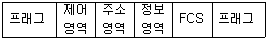
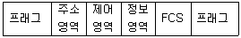
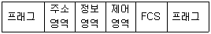
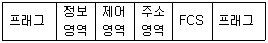
(정답률: 61%)
92. 전송제어 프로토콜 중 문자 방식 프로토콜에서 전송끝 및 데이더 링크 초기화 부호는?
- SOH
- ACK
- SYN
- EOT
(정답률: 58%)
93. 채널 대역폭이 150[kHz]이고 S/N비가 15일 때 채널용량 [kbps]은?
- 150
- 300
- 600
- 750
(정답률: 53%)
94. IEEE 802.5 는 무엇에 대한 표준인가?
- 이더넷
- 토큰링
- 토큰버스
- FDDI
(정답률: 59%)
95. 전송하려는 부호어들이 최소 해밍 거리가 7일때, 수신시 정정할 수 있는 최대 오류의 수는?
- 2
- 3
- 4
- 5
(정답률: 53%)
96. 프로토콜의 기본 구성 요소가 아닌 것은?
- 개체(entity)
- 구문(syntax)
- 의미(semantic)
- 타이밍(timing)
(정답률: 50%)
97. 1000BaseT 규격에 대한 설명으로 틀린 것은?
- 최대 전송속도는 1000 kbps 이다.
- 베이스 밴드 전송 방식을 사용한다.
- 전송 매체는 UTP(꼬임쌍선) 이다.
- 주로 이더넷(Ethernet)에서 사용된다.
(정답률: 55%)
98. HDLC의 ABM(Asynchronous Balanced Mode) 동작모드의 부분집합으로 X.25의 링크 계층에서 사용되는 프로토콜은?
- LAPB
- LAPD
- LAPX
- LAPM
(정답률: 54%)
99. 데이터 변조속도가 3600baud이고 퀴드비트 (Quad bit)를 사용하는 경우 전송속도(bps)는?
- 14400
- 10800
- 9600
- 7200
(정답률: 64%)
100. 양자화 스텝수가 5비트이면 양자화 계단수는?
- 16
- 32
- 64
- 128
(정답률: 71%)